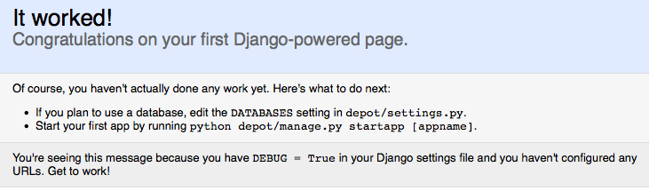

预备知识：Django 第一步¶
对于一个 Web 框架，掌握了三部分的内容，就可以说是迈出了第一步。
- 准备开发环境
- 创建一个工程，并运行
- 开发hello world应用
准备环境¶
首先应该是安装 Python 2.7 和 Django 1.3。这点官方网站有很详细的说明，网上也有很多教程，这里就不再重复了，只是表达一个对操作系统的观点：
- OS X：对程序员和用户都很友好
- Linux：对程序员很友好
- Windows：对用户貌似友好
到底使用哪个操作系统，仁者见仁。
然后是开发工具的选择。建议抛弃 IDE，使用一个好的文本编辑器。强烈推荐 Vim。但如果你选择 Emacs，我无话可说。
创建工程¶
Django 作为一个 Web 框架，第一步应该是能够在浏览器中看到页面。如果已经安装好环境的话。
首先创建工程，即开始创建名为 depot 的工程：
$ django-admin.py startproject depot
与 Rails 相比，过程很安静，结果很干净。如下：
depot/
__init__.py
manage.py
settings.py
urls.py
这几个文件的作用如下：
- _init__.py：Python 的模块定义文件。这是一个空文件，一般你不需要修改它。
- manage.py：一个命令行工具，生成这个文件仅仅是为了方便。可以通过 $ python manage.py help 查看该工具的功能。完全不需要编辑这个文件。
- settings.py：该 Django 项目的设置或配置。
- urls.py：Django 项目的 URL 设置。
与 Rails 不同，Django 初始工程的文件很少，可以很容易地阅读所有的代码。但这些文件已经构成了一个可运行的 Django 应用。
进入工程目录并运行该工程：
$ cd depot/
$ python manage.py runserver
可以看到一些提示信息：
Validating models...
0 errors found
Django version 1.3, using settings 'depot.settings'
Development server is running at http://127.0.0.1:8000/
Quit the server with CONTROL-C.
此时 Web Server （开发环境）已经运行了，用浏览器访问http://127.0.0.1:8000/，可以看到如下的界面：
说明Django已经开始工作了。
hello Django！¶
与 Rails 不同，Django 不需要生成 controller、helper、view 等一大堆文件，要实现一个 hello 程序，只需要几行代码。
Django Web 应用中通常包含 URLconf, view, template, model 四个部分。但这些部分不是完全必需的。比如我们要实现一个最简单的 hello, Django! ，只需要定义 URLconf 和 view 即可。
让我们把“需求”明确一下，hello,Django！ 实现如下功能：在浏览器中输入 http://127.0.0.1:8000/hello, 显示 hello Django!。
首先要实现一个视图（view) 来响应请求。在 Django 中视图是一个函数，该函数接受一个 HttpRequest 参数，并返回一个 HttpResponse。我们可以在任何地方定义这个函数，但通常会放在 Django app 的 views.py 文件中。在 hello,Django! 中我们不需要创建一个 Django app（因为不需要 model），所以可以在项目目录 Depot 中创建一个 view.py 文件，并定义 hello 视图函数：
# depot/views.py:
from django.http import HttpResponse
def hello(request):
return HttpResponse("hello, Django!")
接下来是将前面定义的 URL 映射到这个视图函数。这是由 URLconf 完成的。URLconf 的本质是 URL 模式以及要为该 URL 模式调用的视图函数之间的映射表。
打开生成的 urls.py 文件，先在文件前面 import 刚才创建的 view，然后在 tuple 类型的变量 urlpatterns 中加入 hello 的映射关系：
# depot/urls.py
from django.conf.urls.defaults import patterns, include, url
from depot.views import hello
urlpatterns = patterns('',
url(r'^hello/$', hello),
)
此时访问 http:/127.0.0.1:8000/hello, 将会显示 hello, Django!。
URLconf 理解起来也很容易，即 urlpatterns 中的每一项是一个二元组 (正则表达式，视图函数)。当 Django 接收到 HTTP 请求的时候，从 urlpatterns 中找到匹配的表达式，并将请求发送给对应的视图函数，最后视图函数返回一个 HTTP 响应，交给 Django 处理。如此而已。
至此，Django 的第一步已经迈出，你至少已经可以开始 CGI 风格的 Web 开发了。